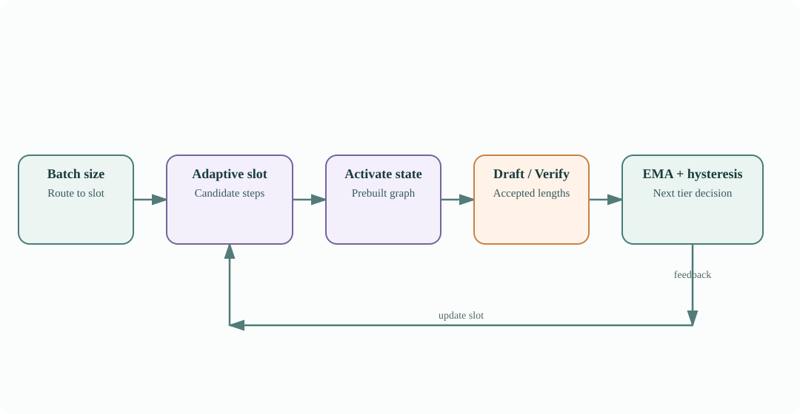
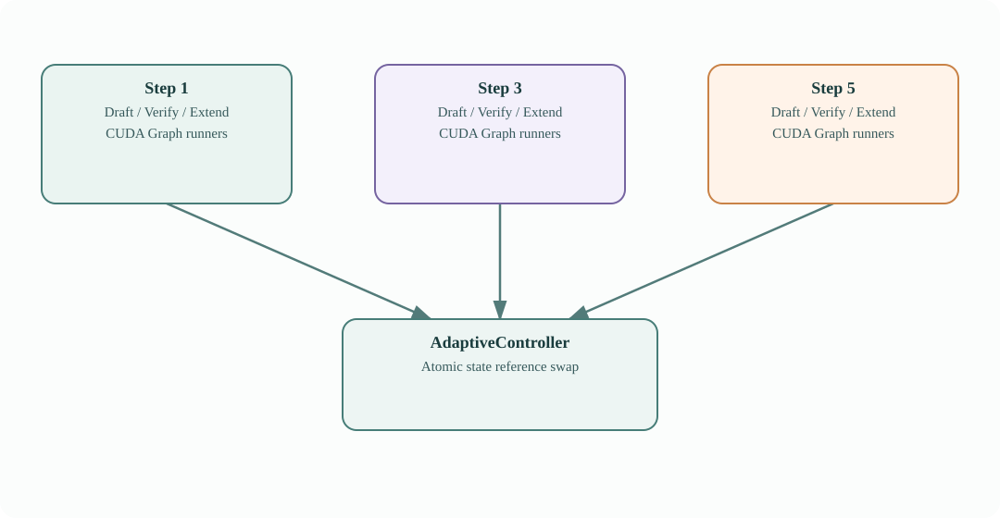

第 29 章 · SGLang 生产推理机制
Adaptive Speculative Decoding：EMA、Batch Buckets 与 Runtime State
从接受长度反馈到按 Batch Size 选择 speculative steps，理解 EMA、Hysteresis、预构建 CUDA Graph 与 EAGLE 限制。
从接受长度反馈到按 Batch Size 选择 speculative steps，理解 EMA、Hysteresis、预构建 CUDA Graph 与 EAGLE 限制。 本章区分研究论文的算法贡献、SGLang 当前源码实现、CPU-only 教学模型与硬件/部署限制。所有实现断言固定到 2026-11-23 的上游快照。
读完本章，你应该能
- 从请求入口追踪到对应的运行时状态、缓存或执行组件。
- 解释关键数据结构、数学关系、并发边界和失败模式。
- 使用可复现的 CPU-only toy 实验验证核心不变量，而不把教学代码误称为生产内核。
1. 固定 speculative steps 为什么会失灵
EAGLE / EAGLE3 每轮需要 draft model 生成候选，再由 target model verify。静态 speculative_num_steps 在低负载、高接受率时可能太保守；在高 batch、低接受率时又可能生成大量最终被拒绝的 draft token。第 10 章解释了 draft tree 与 target verification；本章不重复算法，而是研究 SGLang 如何根据实时 batch size 和 observed accept length 调整 draft steps。

2. Batch size 会改变每个 draft step 的成本
一个 draft step 不只消耗 draft model compute，还占用 attention backend、KV cache 和 graph state。batch 越大，额外一步 draft 的总成本通常会随并发请求放大；因此小 batch 的最佳 step count 不一定适合大 batch。自适应策略将 batch size 分层，每个 bucket 独立跟踪接受长度。这样低 batch 的高接受率样本不会污染高 batch 的统计量。
3. Per-BS slot：独立 EMA 与候选步数
AdaptiveSpeculativeParams 将 batch size 路由到一个 AdaptiveStepSlot。每个 slot 有 candidate_steps、ema_alpha、warmup_batches、update_interval、up_hysteresis、down_hysteresis 和可选 ceiling_coeff。接受长度以 batch average 输入 EMA；warmup 和更新间隔用于抑制早期噪声与过频切换。当前官方文档明确限定：只支持 EAGLE / EAGLE3，并且要求 speculative_eagle_topk=1；其他配置会回退到静态 speculative settings。不要把这个 adaptive controller 泛化到任意 speculative algorithm 或 top-k tree。
4. EMA 与 Hysteresis：让步数缓慢调整
令本轮每个 request 接受的 draft token 数为 a_i，批次平均为 ā。EMA 平滑当前观测与历史状态；再按候选步数和 hysteresis 阈值决定是否上调或下调。一个直觉公式是 target_steps ≈ clamp(round(EMA_accept_len)+1, min_steps, max_steps)。实际实现还会通过 candidate_steps、up/down hysteresis、warmup、update_interval 与 ceiling rule 限制切换，因此公式只是解释方向，不是全部实现。
源码：AdaptiveStepSlot。
5. Prebuilt SpecRuntimeState：切换的是整套资源
不同 speculative step 会影响 draft、verify、extend 的 tensor shape 与 CUDA Graph。SGLang 在初始化时为候选 steps 构建 SpecRuntimeState，每个 state 持有对应 attention backend、draft/target graph runner，以及可选 draft-extend graph。运行时切换不是在线重新 capture graph，而是从预先建立的 state pool 中选择一个完整 state，再通过 apply_runtime_state 切换引用。这样可避免在当前请求轮次中间重建图，但会带来启动时间和 GPU memory 的预留成本。

6. Runtime flow：先选档，再 Draft / Verify
一轮执行的顺序可以概括为：按当前 batch size 选择 step tier → activate prebuilt state → draft → target verify → draft KV catch-up / extend → 把每个 request 的 accepted draft count 反馈给对应 slot → EMA / hysteresis 决定是否切换。策略更新发生在 verify 完成后；如果 tier 改变，controller 再激活对应的预构建 state。不能在 draft 或 verify 尚未完成时替换 backend / graph，否则可能破坏本轮资源和 shape 假设。
源码：AdaptiveController.init_states / activate_step_by_batch / on_verify_complete。
7. 适用条件与不适用场景
Adaptive mode 主要适合接受长度随时间变化、batch size 跨多个区间变化的 workload。如果某个模型的 draft quality 稳定，且 static steps 已经过充分调优，动态策略可能没有收益。候选步数越多，预构建状态越多，启动时间和显存占用也越高。高 batch 可能更适合较窄的 candidate ladder；弱 draft model 适合保守配置。必须按 model、batch distribution、prompt/output distribution、acceptance length、graph memory 和吞吐一起调优。
8. 与 BanditSpec / Learning to Draft 的研究区别
BanditSpec 把 speculative 参数选择建模为在线 multi-armed bandit；Learning to Draft 通过 RL 联合调整 draft 与 verify 策略；SGLang 当前实现则使用按 batch-size 分层的 EMA / hysteresis policy，并预构建 runtime state。三者的优化目标、学习信号、训练需求和执行成本不同。论文中的 throughput improvement 不能直接等同于 SGLang adaptive mode 的收益；后者必须在目标模型、硬件、流量分布和配置下实测。
9. 交互：选择机制配置
Mechanism selector
小 Batch：如果 draft 接受率持续高，EMA 上升，policy 可逐步探测更高的 speculative steps；但必须观察额外 draft compute 是否值得。
大 Batch：每个无效 draft step 的成本会被更多请求放大；候选步数可更保守，并使用独立 slot 避免小 Batch 统计污染。
稳定流量：如果静态配置已很好，adaptive switching 可能不带来收益。更复杂的候选 ladder 还会提高预构建 graph 的显存与启动成本。
交互只改变教学状态，不会启动真实 SGLang server 或调用 GPU kernel。
10. 源码阅读路线与参考资料
- Adaptive Speculative Decoding docs：支持条件、EMA、配置和 tuning tips。
- adaptive_spec_params.py：per-BS EMA slot 和 hysteresis。
- adaptive_runtime_state.py：SpecRuntimeState 与 state pool。
- BanditSpec · ICML 2025；Learning to Draft · 2026。
实现快照：sgl-project/sglang@563813c0d60282fa848382fec600b40d28ddec98。第 10 章解释 EAGLE 采样正确性；本章解释自适应控制策略和资源切换。
可执行教学实验：examples/adaptive_spec.py（Python 标准库；不是实际 GPU 实现）。